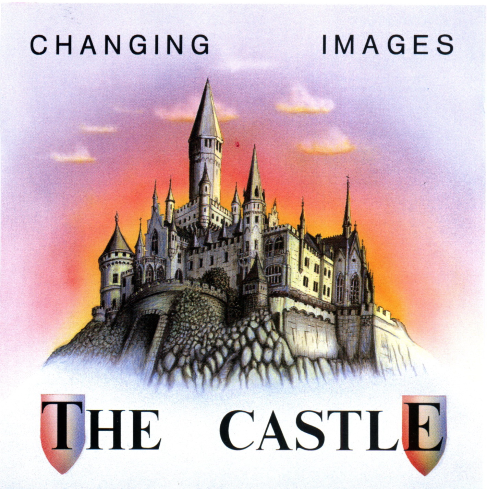
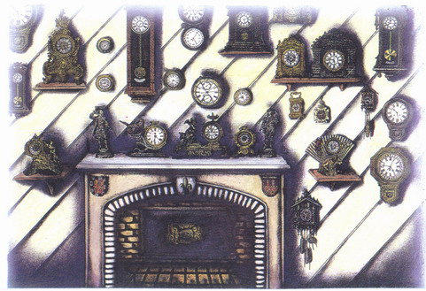
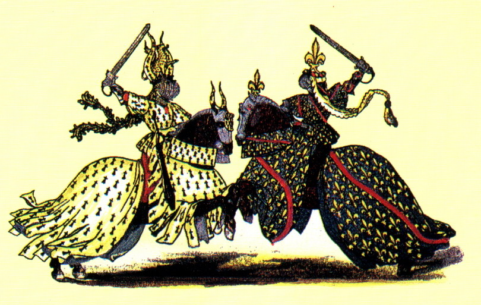

CD Album · 1991 · MUSEA 4044.AR
The Castle
A conceptual journey through ancient rooms, forgotten stories and the atmospheres stored in old walls.
The concept
Imagination of atmospheres.
Old castles always fascinated Martin and Volker. Visiting castles in England, France or Germany can feel like a time-warp back into the Middle Ages. That feeling became the foundation for this concept album: a symbiosis of symphonic rock, electronic and minimal music with a classical and ambient touch — almost like a movie soundtrack.


Listen to “Ouverture” (excerpt)
The tracks
- Ouverture 5:57
- The Alley 5:02
- Entrance Hall 6:05
- Ballroom 3:38
- Hall of Clocks 4:56
- The Crypt 4:05
- Ancient Gallery 5:51
- The Tower 5:30
- Dungeons 5:00
- The Garden 5:40
- The Knights 5:16